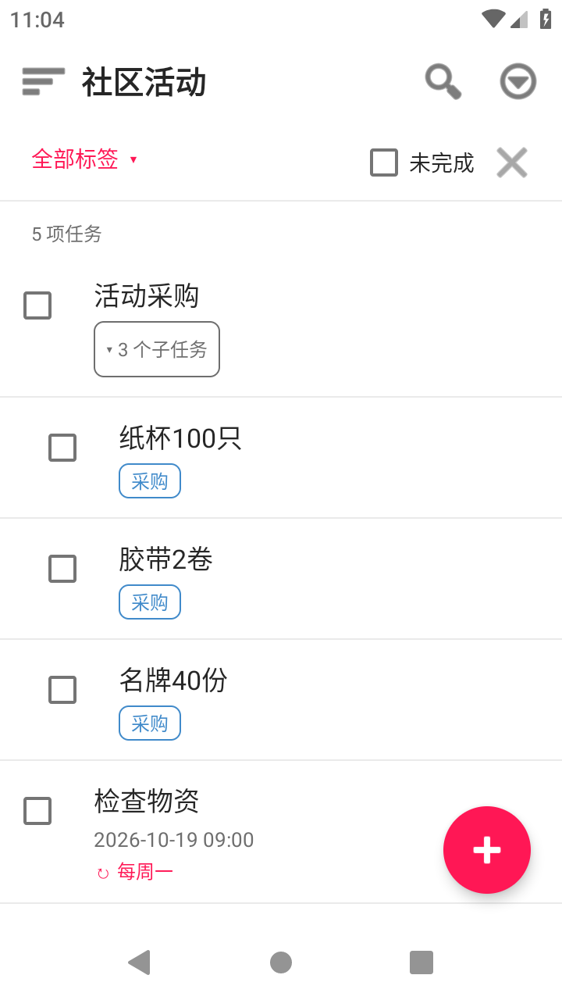
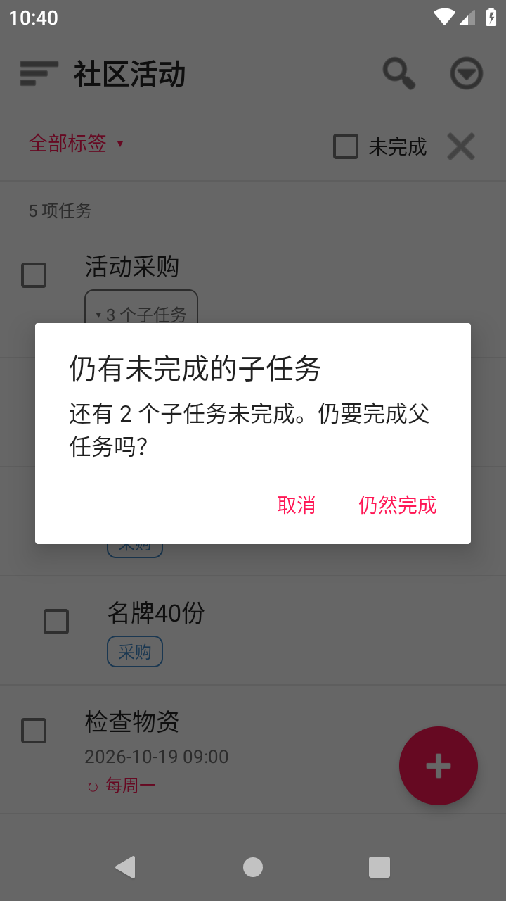
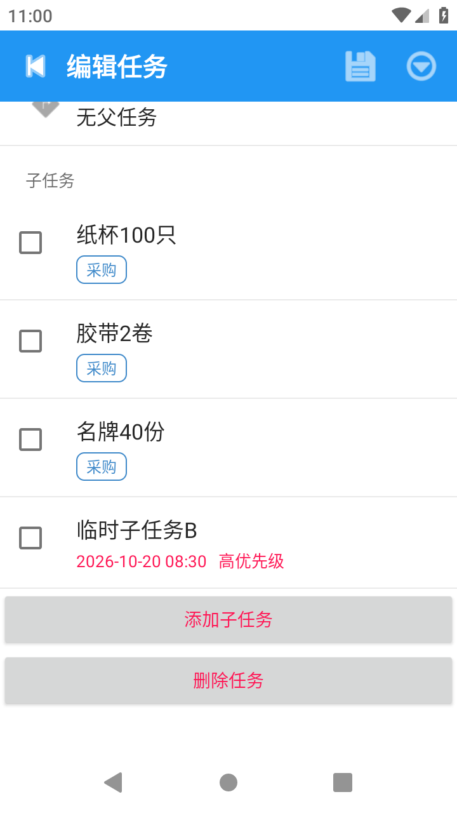
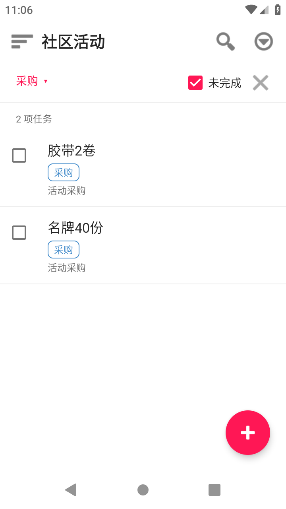
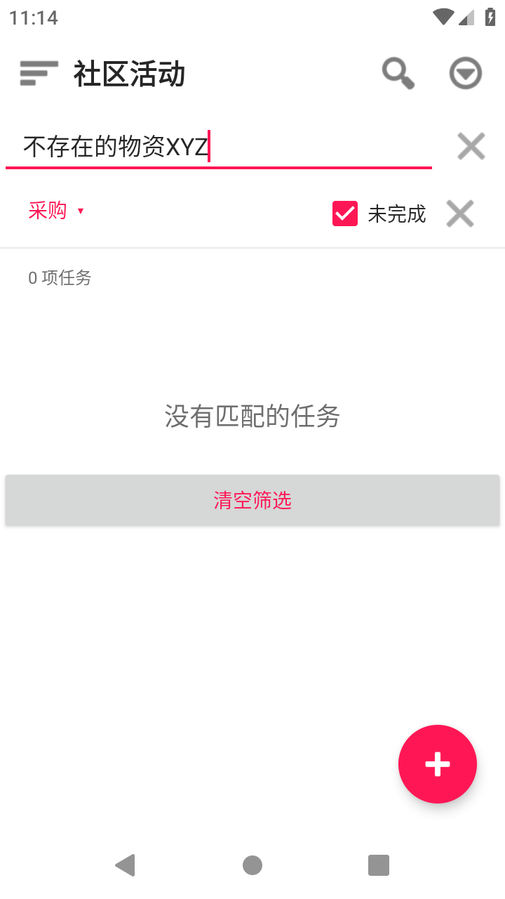
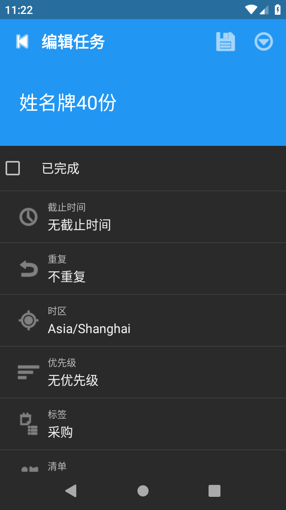
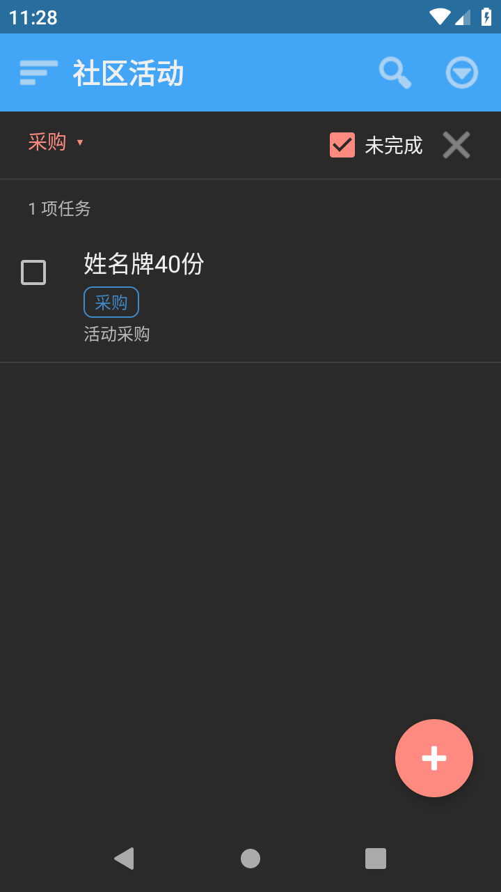

Tasks.org
多级清单、重复任务、标签筛选与草稿主题 · MCP-009
35 / 35必需验收项通过
0 次人工候选代码修复
Android 9API 28 实际运行
按公开题面生成的候选 App，并非官方 Tasks.org。验收覆盖限定合同，高保真与长程难度仍未建立结论。执行器调整、格式等价的检查器修正和设备批次不计作候选代码修复。
已验证结果
父任务未完成子项提示与取消；真实子任务增删改；每周任务完成、撤销、再次完成和冷启动，保持唯一实例。
采购且未完成筛选随标签编辑从两项变为一项，搜索空态与返回保持条件；草稿跨后台返回、主题切换、保存重启及放弃编辑均核对实际数据和画面。
数据证据包括用户导出及冷停止后的完整 SQLite 归档。实际元数据和草稿使用受限数据类解码，未用基线补造当前字段。
实际运行截图















逐项验收
35 项必需检查 · 全部通过
| 编号 | 验收条件 | 结果 |
|---|---|---|
| R1-01 | 清单、任务编辑页展示标题、截止时间、优先级、标签及子任务 | 通过 |
| R1-02 | 允许增删改，不把嵌套数据压成只读文本 | 通过 |
| R2-01 | 以input/seed.json建立活动清单与三个子任务 | 通过 |
| R2-02 | 父任务完成前须提示仍有未完成子任务，允许取消并保持状态 | 通过 |
| R3-01 | 重复任务每周一09:00（Asia/Shanghai） | 通过 |
| R3-02 | 完成2026-10-19实例后下次截止为2026-10-26 09:00 | 通过 |
| R3-03 | 撤销完成恢复原实例，不叠加生成 | 通过 |
| R4-01 | 按标签采购与未完成筛选，编辑子任务标签/完成状态后列表即时变化 | 通过 |
| R4-02 | 清空筛选后完整恢复，重启不丢数据 | 通过 |
| R5-01 | 深色/浅色主题切换保留筛选及编辑中的内容 | 通过 |
| R5-02 | 未保存返回可丢弃或继续 | 通过 |
| T01-02 | 初始状态：按seed.json导入1个父任务、3个子任务及1个重复任务。 | 通过 |
| T01-04 | 操作：打开活动采购，完成纸杯，再尝试完成父任务并取消。 | 通过 |
| T01-06 | 中间状态：纸杯已完成，另外两项未完成；父任务确认出现。 | 通过 |
| T01-08 | 最终状态：父任务仍未完成，纸杯完成状态保留。 | 通过 |
| T01-10 | 恢复/异常：再次编辑纸杯取消勾选，恢复初态。 | 通过 |
| T01-14 | 待采集证据：操作前、关键中间态、最终态截图；非视觉语义补导出文件/数据摘要。不能用官方截图冒充实测。 | 通过 |
| T02-02 | 初始状态：检查物资截止2026-10-19 09:00+08:00，时钟固定2026-10-19 08:30。 | 通过 |
| T02-04 | 操作：完成检查物资，查看下次截止，撤销完成，再次完成。 | 通过 |
| T02-06 | 中间状态：先出现10月26日截止；撤销回19日。 | 通过 |
| T02-08 | 最终状态：只有一个下次实例，截止26日，无重复任务。 | 通过 |
| T02-10 | 恢复/异常：重启后仍只一个活动实例。 | 通过 |
| T02-14 | 待采集证据：操作前、关键中间态、最终态截图；非视觉语义补导出文件/数据摘要。不能用官方截图冒充实测。 | 通过 |
| T03-02 | 初始状态：独立重置并导入seed.json；先打开纸杯100只并勾选完成，保存。确认纸杯已完成，胶带/名牌未完成且标签采购。 | 通过 |
| T03-04 | 操作：筛选采购且未完成；把胶带标签改为场地；清空筛选。 | 通过 |
| T03-06 | 中间状态：筛选初始2项，编辑后仅名牌。 | 通过 |
| T03-08 | 最终状态：清空后任务完整；胶带仍为场地。 | 通过 |
| T03-10 | 恢复/异常：搜索不存在词显示空态，返回原筛选不丢条件。 | 通过 |
| T03-14 | 待采集证据：操作前、关键中间态、最终态截图；非视觉语义补导出文件/数据摘要。不能用官方截图冒充实测。 | 通过 |
| T04-02 | 初始状态：编辑名牌，尚未保存。 | 通过 |
| T04-04 | 操作：标题改为姓名牌40份，切后台后返回；保存；切深色，重启。 | 通过 |
| T04-06 | 中间状态：草稿返回仍在；保存后列表更新。 | 通过 |
| T04-08 | 最终状态：深色主题和新标题保留，层级关系不变。 | 通过 |
| T04-10 | 恢复/异常：重新编辑标题后返回放弃，不覆盖已保存版本。 | 通过 |
| T04-14 | 待采集证据：操作前、关键中间态、最终态截图；非视觉语义补导出文件/数据摘要。不能用官方截图冒充实测。 | 通过 |
全部原条款保留；视觉参考、来源说明与范围排除单列，实测证据要求仍计入必需项。
证据文件
ACCEPTANCE.jsonACCEPTANCE-RECEIPT.jsoninitial-state-check.jsonindependent-tool-tests.jsonscreenshot-sources.json
受验 APK SHA256：0008d41e358d19dfe600a26743fecc1c0dffdb863c5af72da1456220832587b4